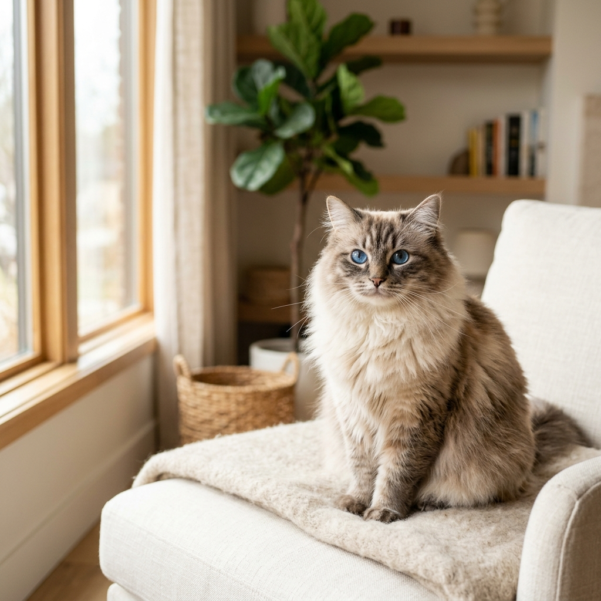
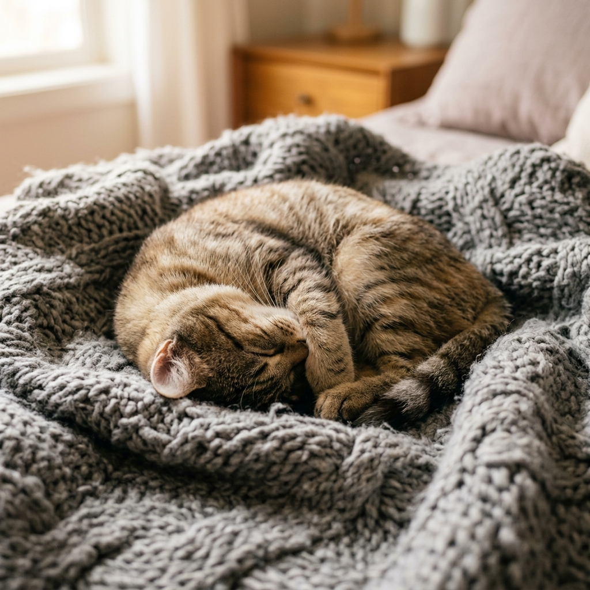
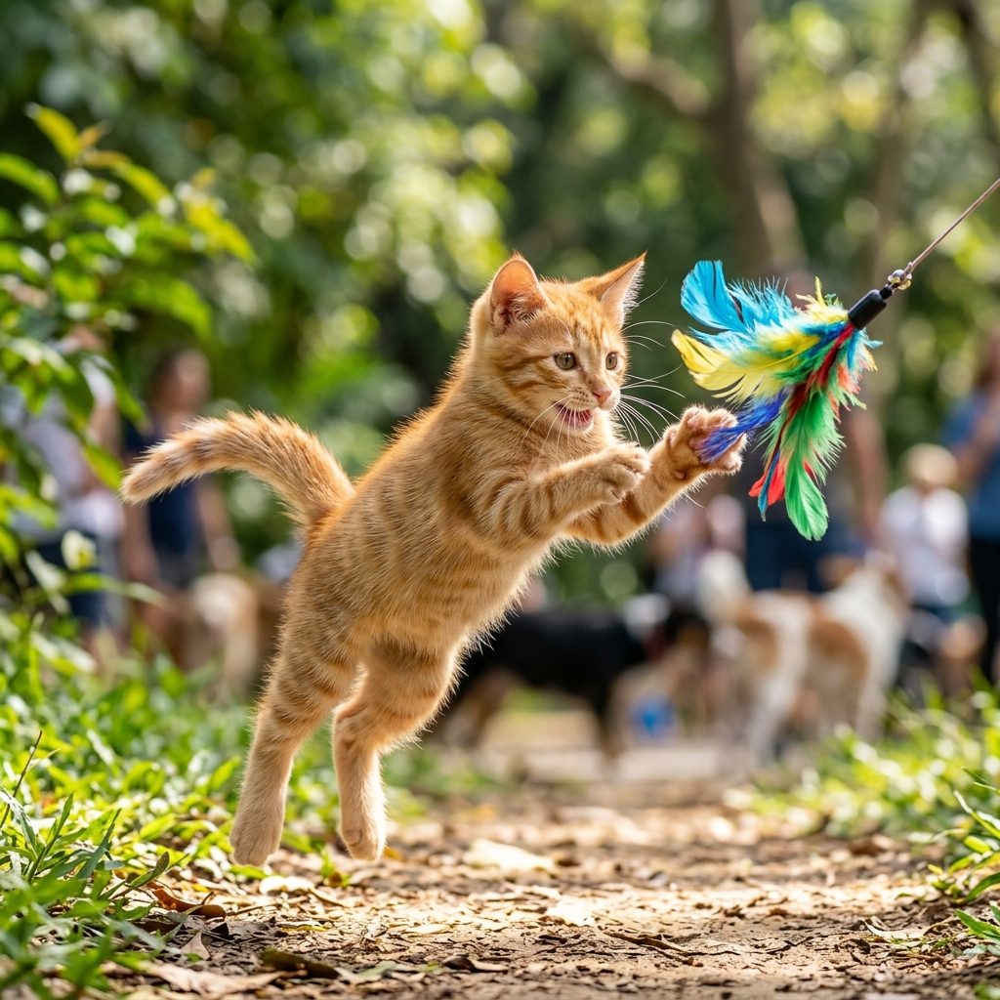
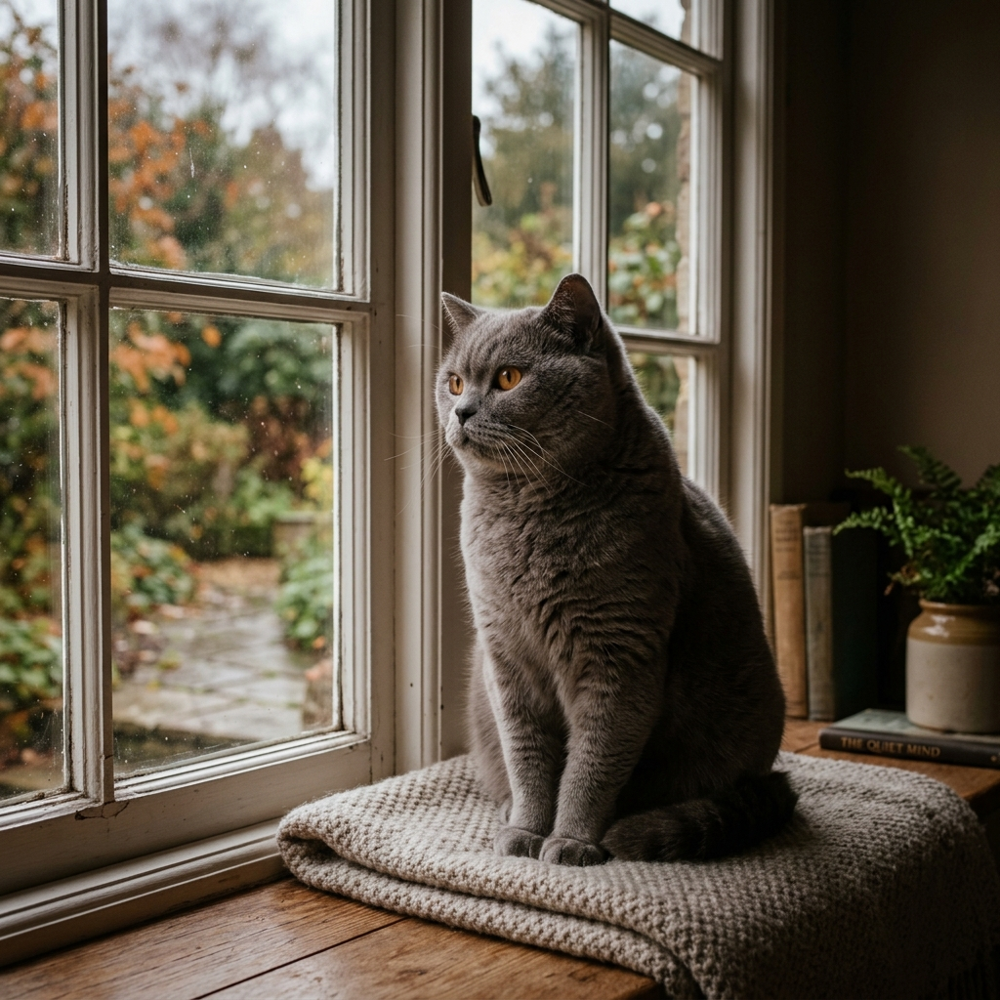
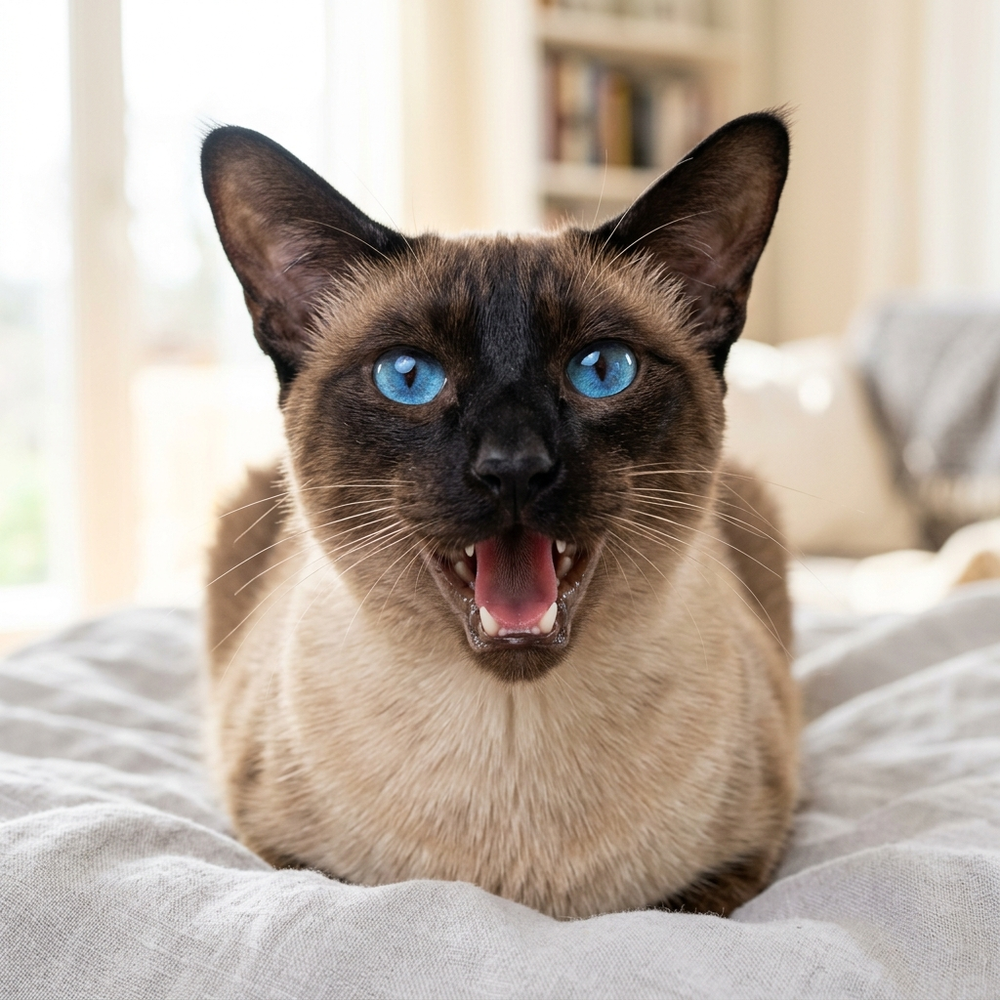

Discover the rich, multifaceted nature of cats. From their playful antics to their soothing purrs, find out why bringing a cat into your life is one of the most rewarding decisions you will ever make.

Every cat is a unique individual. Explore the primary temperaments that define how cats interact with their humans and environment.

Affectionate, calm, and deeply attached. This nature thrives on physical contact and loves nothing more than nesting in your lap for hours.

High energy, curious, and clever. These cats treat the world as their playground, scaling high shelves and hunting feather toys.

Peaceful, self-reliant, and observant. Sages enjoy their own company, greeting you with soft blinks and respecting your space.

Highly communicative, expressive, and interactive. They talk with chirps, meows, and trills to voice their opinions on everything.
Unlike other pets, cats possess a beautiful blend of independence and loyalty. They integrate seamlessly into modern lives, offering comfort and companionship without demanding complete lifestyle shifts.
of the day spent grooming (incredibly clean)
lower risk of stroke/heart attack in cat owners
No outdoor walks required. They are naturally litter-trained, self-grooming, and perfectly content staying indoors while you are at work.
A cat's purr (20-140 Hz) is scientifically proven to reduce stress, lower blood pressure, and even aid in the healing of bones, tendons, and muscles.
Whether you live in a studio apartment or a spacious villa, a cat adapts beautifully. Vertical spaces like cat trees are all they need to feel like royalty.
Cats are quiet companions. They won't disturb your neighbors, they won't interrupt your Zoom calls, and they offer a silent, comforting presence by your side.
What kind of cat temperament aligns best with your daily routine and home environment? Take our 4-question quiz to discover your ideal feline match!
A smooth transition makes all the difference. Follow these essential starting steps to ensure your new companion feels safe and loved from day one.
A whole house can be overwhelming for a new cat. Start them in a single, quiet room (like a bedroom or bathroom) with their litter box, food, water, and bed. Let them adapt to the scents and sounds first.
Always have **N+1** litter boxes in your home (where N is the number of cats). Keep the box in a quiet, low-traffic area where the cat won't feel cornered or startled while using it.
Cats feel safe when they are up high. Install cat shelves, purchase a sturdy cat tree, or clear off window sills. This gives them a vantage point to observe their new kingdom safely.
Let the cat dictate the pace. Sit quietly on the floor, offer your hand for a sniff, and let them come to you. Slow blinks are a sign of trust - try blinking slowly at them to say "I am safe."
Cuddlers are highly social with their humans but usually prefer a calm, quiet environment. They are the cats who will follow you from room to room, wait for you to sit down, and immediately climb onto your lap. Their purring acts as a natural therapy, slowing your heart rate and releasing dopamine.
Ragdoll, Persian, Birman, and many affectionate domestic shorthairs.
Explorers possess an endless curiosity and high physical energy. They see vertical spaces as heights to conquer and closed doors as puzzles to solve. They love interactive toys, chasing laser points, fetching small balls, and learn tricks very quickly.
Bengal, Abyssinian, Siamese, and energetic domestic tabbies.
Sages are calm, self-sufficient, and highly dignified. They show affection on their own terms—often by simply occupying the same room as you or blinking slowly from across the room. They are the perfect companions for busy professionals because they don't experience separation anxiety.
British Shorthair, Russian Blue, Chartreux, and mature domestic shorthairs.
Chatterboxes have a lot to say and love constant engagement. They use a wide vocabulary of vocalizations—chirps, trills, standard meows, and deep yowls—to converse with their owners, ask for food, or request playtime. They are extremely social and thrive on attention.
Siamese, Balinese, Oriental Shorthair, and vocal mix-breeds.